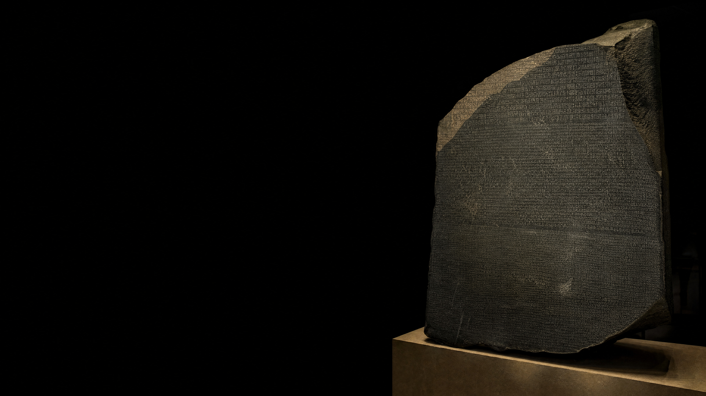
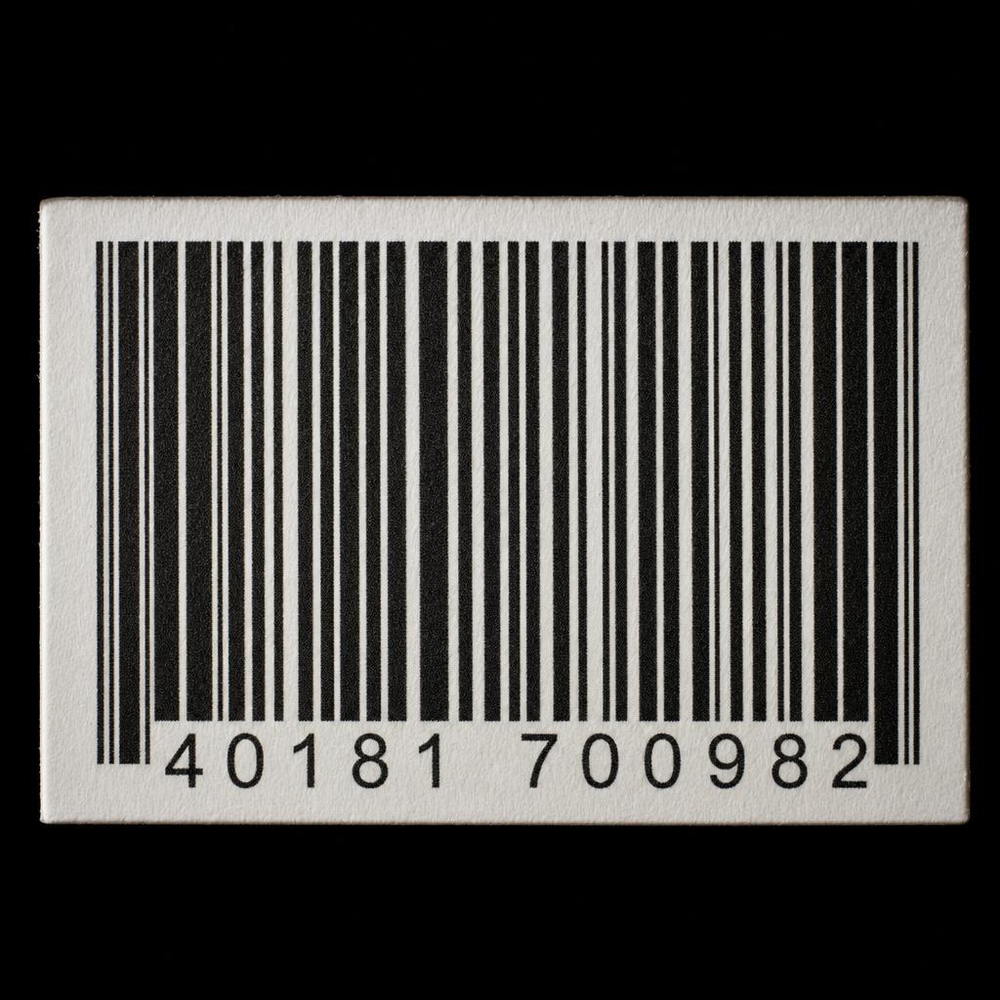
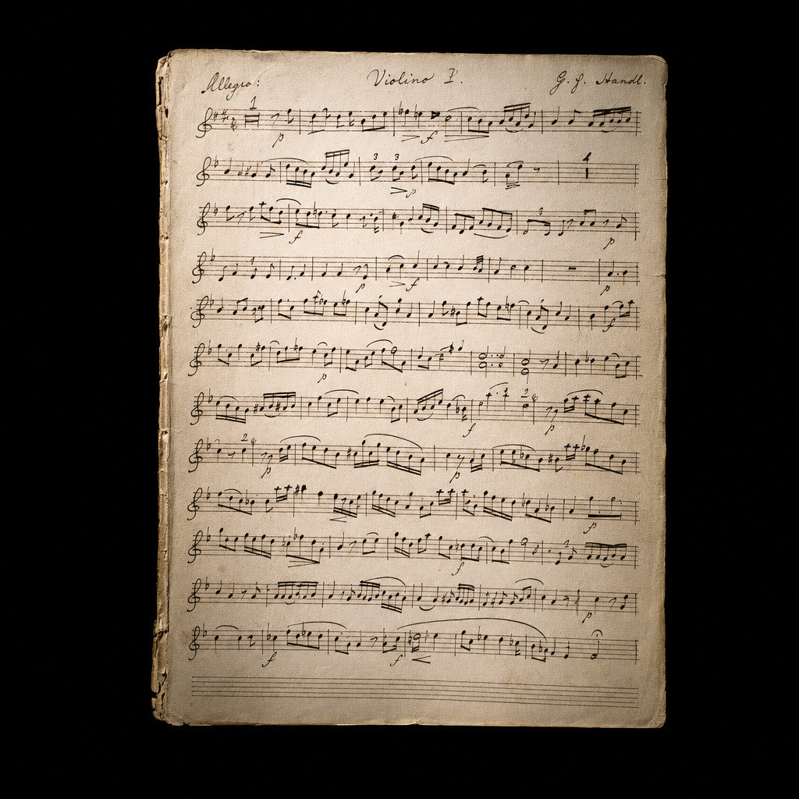
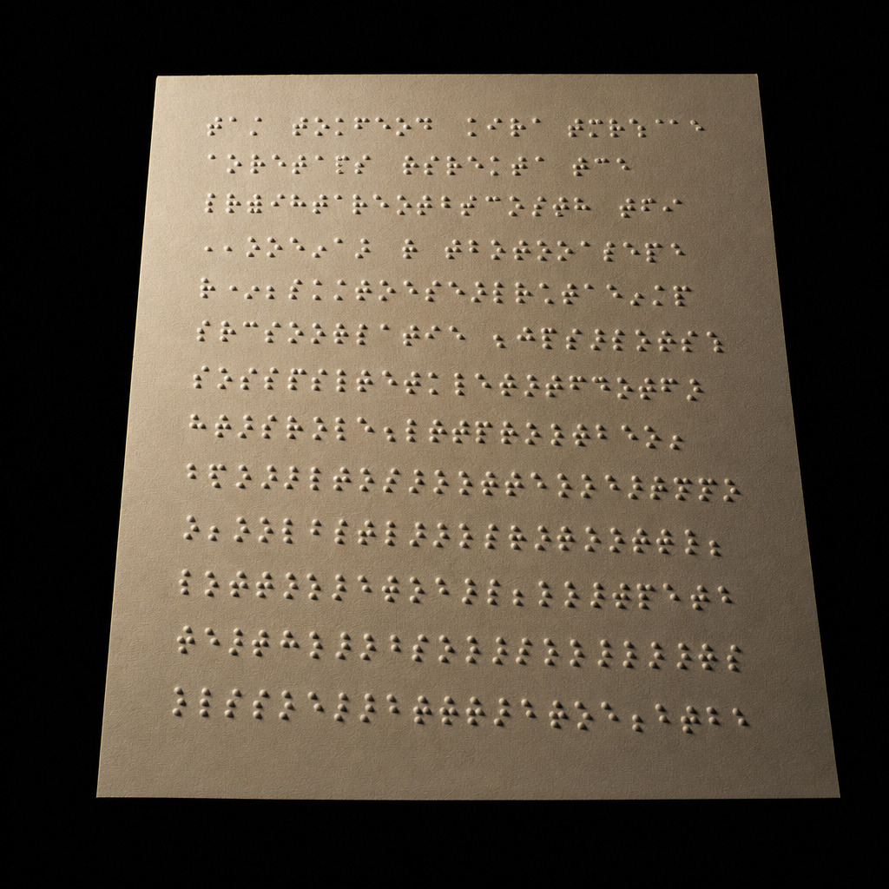
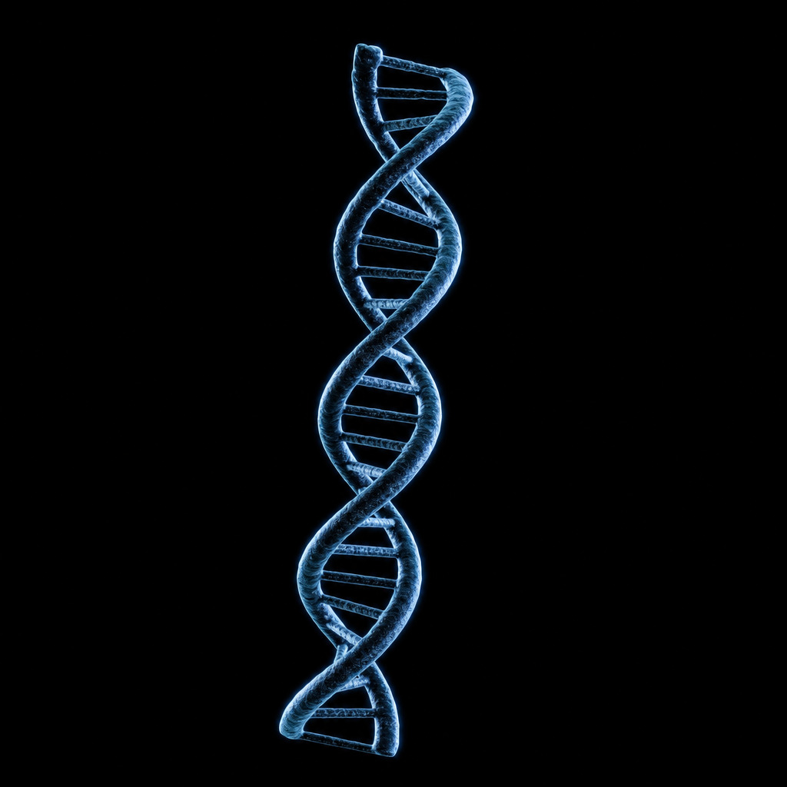
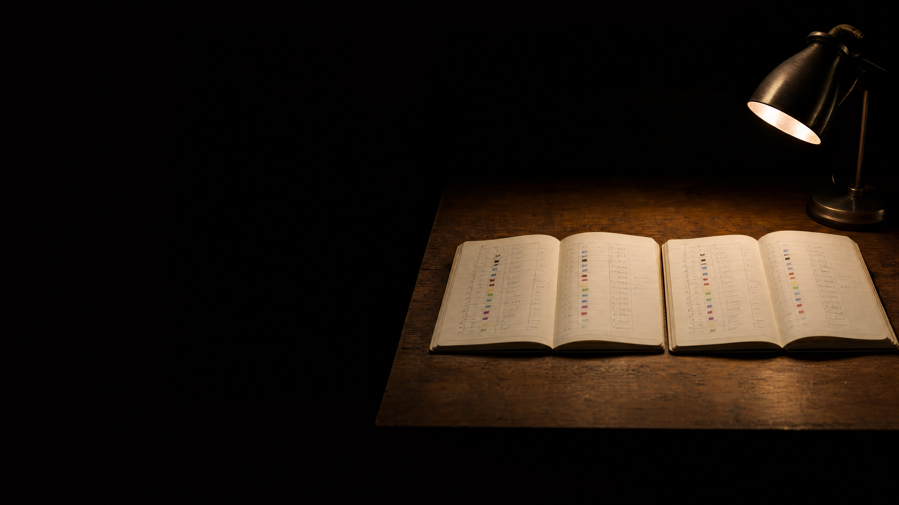

who still knows
what this means?
what a code system is
inside the computer a letter is only a number, and it becomes a letter again when a program draws it.
the same letter, three code systems
a code is agreed and not given by nature, which is why there are several of them.
when the table is too small
when one table turned out too small, the world agreed on a bigger one.
two tables, one message
the receiver gets no error message, only a clean word that nobody sent.
how many positions per letter?
26 letters need 3 colour positions, and that leaves 38 codes to spare.
the codebook
the spare codes are stock for later, not waste.
the same table, both directions
decoding is the same table, read the other way.
what is not in the table
something happens to such a character either way, so decide what.
a code that does not work
both readings follow the table, because the receiver cannot see where a character ends.
try it: the prefix trap
how many readings does the receiver find for your word?
get them down to one without giving every code word the same length
then build a code with as many readings as you can
three ways out
there are three answers to the same question, and each of them works.
what fixed length costs
variable length is shorter on average, but not for every word.
one byte sequence, three readings
the bytes do not say which reading is right.
one pixel, three numbers
an rgb led mixes its colour from the same three shares as a pixel on the screen.
who says which reading?
which reading applies is one more agreement.
four agreements, no computer

barcode
bar widths → digits

sheet music
position → pitch and length

braille
six dots → a character

dna
three bases → an amino acid
none of them needs a computer, but every one of them needs an agreement.
the same calculation, three times
braille, dna and the colour alphabet all land on 64.

write the table down
once, for both sides.